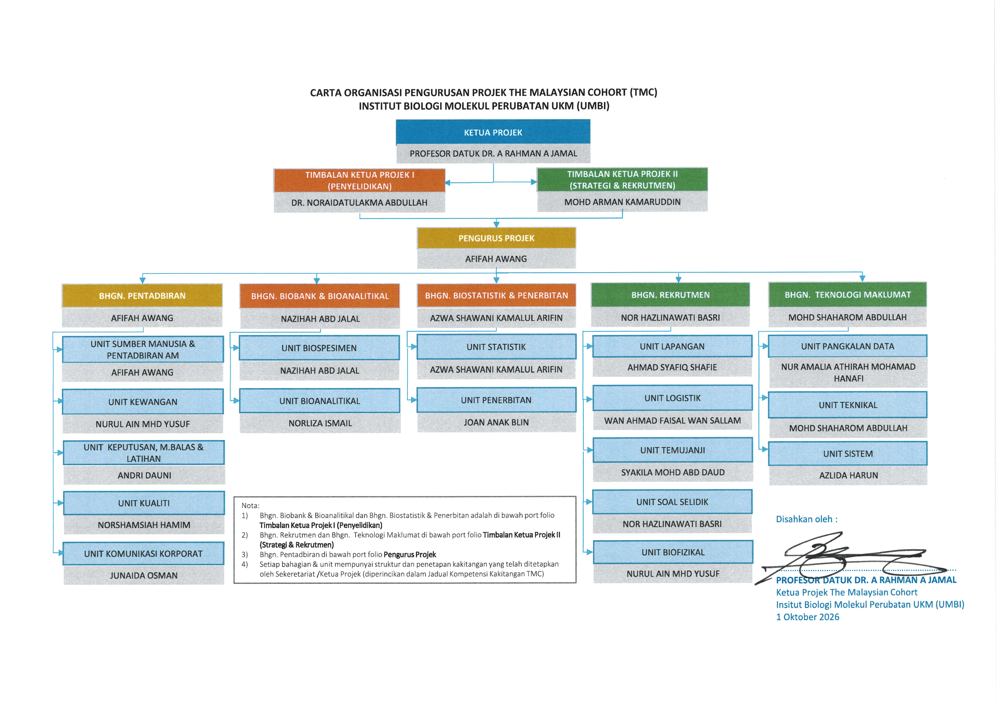

TMC Team
Prof. Datuk Dr. A Rahman A Jamal
Project Leader
Professor VK5 (DU)
Discover our identity and fieldwork, meet the team, and find organisation details and staff contacts in one place.

How project leadership, divisions, and units connect.
UKM-published chart · effective 1 October 2026

Source: UKM organisation chart. For individual staff contacts, use the directory below.
Find a colleague by name, role, division, or unit.
37 people
Public UKM directory · checked 2 October 2026Project Leader
Professor VK5 (DU)
Deputy Project Leader · Research & Publications
Research Fellow DS13
Deputy Project Leader · Recruitment
Science Officer C10
Unit: Human Resources & General Administration
Project Manager
Science Officer C9
Unit: Human Resources & General Administration
Head of Biobank & Bioanalytical Division
Science Officer C10
Unit: Biobank
Head of Recruitment Division
Administrative Officer N9
Unit: Questionnaires
Head of Information Technology Division
Information Technology Officer F9
Unit: Systems & Technical
Science Officer C12
Unit: Results, Feedback & Training
Science Officer C10
Unit: Bioanalytical
Science Officer C9
Unit: Finance
Science Officer C9
Unit: Logistics
Science Officer C9
Unit: Quality
Science Officer C9
Unit: Field Team
Science Officer C9
Unit: Statistics
Science Officer C9
Unit: Biobank
Science Officer C9
Unit: Bioanalytical
Research Officer Q9
Unit: Statistics
Research Officer Q9
Unit: Bioanalytical
Administrative Officer N9
Unit: Quality
Administrative Officer N9
Unit: Appointments
Information Technology Officer F9
Unit: Database
Assistant Information Technology Officer FA5
Unit: Systems
Assistant Science Officer C5
Unit: Bioanalytical
Assistant Science Officer C5
Research Assistant Q1
Unit: Results, Feedback & Training
Research Assistant Q1
Unit: Appointments
Research Assistant Q1
Unit: Appointments
Research Assistant Q1
Unit: Questionnaires
Research Assistant Q1
Unit: Questionnaires
Research Assistant Q1
Unit: Results, Feedback & Training
Research Assistant Q1
Unit: Biobank
Research Assistant Q1
Unit: Bioanalytical
Research Assistant Q1
Unit: Biobank
Research Assistant Q1
Unit: Biophysical
Research Assistant
Unit: Bioanalytical
Research Assistant Q1
Research Assistant Q1
Unit: Bioanalytical
No matching staff. Try another name or reset the filters.
Names, posts, and contact details: UKM staff directory. Division and unit assignments: UKM division directory.
Explore the teams listed in UKM’s published division directory.

Biobank · Bioanalytical
Statistics
Human Resources & General Administration · Results, Feedback & Training · Finance · Quality
Questionnaires · Logistics · Field Team · Appointments · Results, Feedback & Training · Biophysical
Systems & Technical · Database · Systems
Division assignments are taken from the UKM-published list. Staff without a listed division remain available under “Other TMC team members”.
The human figure carrying a DNA duplex represents scientists' responsibility to improve Malaysians' health. The DNA reflects genomic and proteomic research; red, white, blue, and yellow echo the Jalur Gemilang.
Read UKM's logo explanationField recruitment is supported by transport for samples, staff, and equipment, alongside a mobile laboratory for processing blood and urine samples.
Published inventory; contact TMC to confirm the current fleet.
UKM fieldwork transport informationExplore the study's purpose and objectives or UKM's milestones and achievements infographics.